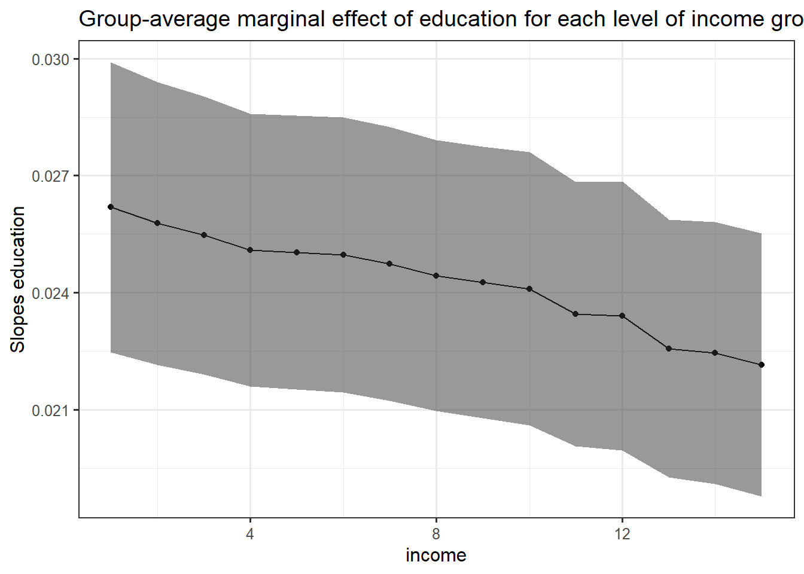
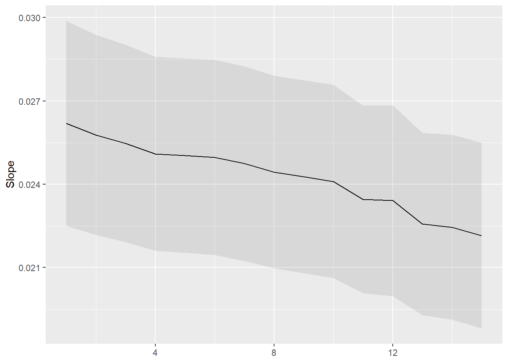
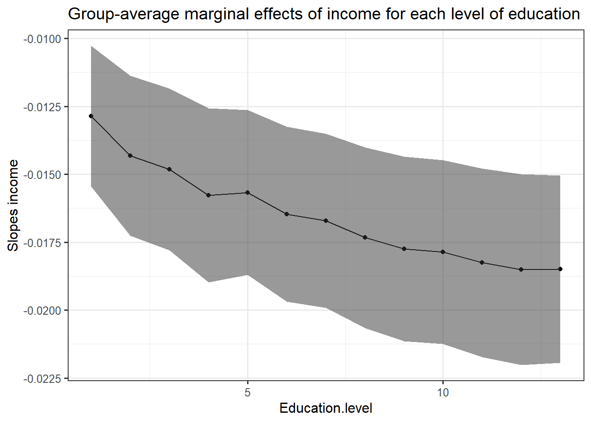
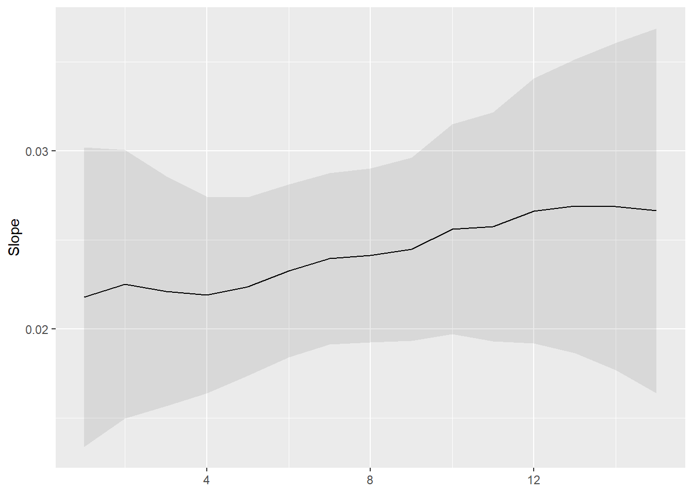

Note: this post is not finished and still in progress
Two years ago, Piketty and his team published a fascinating book about the evolution of political cleavages in almost all democratic countries in the world and even beyond. The publication of this book and of its online database got me very interested in the study of political cleavages from a political economy approach. This book contains huge amount of findings and observations, but there is one which is really emphasized by the authors: from roughly the 1980s until, the class-based political divide has become a multidimensional one incorporating a “educational” or, in Inglehart terms, a “postmaterial” or “cultural” cleavage (Gethin, Martinez-Toledano, and Piketty 2021) (Inglehart 1971). Very shortly, They found that the electoral support for the left shifted from the low income and low education classes to the highly educated ones. Regarding the electoral support for the right, the latter remains positively correlated with income.
This post is going to simply test this finding for Switzerland using the post-electoral survey for the National Council election in 2015. The following analysis is based on data analysis of the Swiss Election Study (Selects) of 2019. The dataset can be found here. I will test if the support for the left is linked positively with the education level and negatively with income.
To analyze the link between vote for the left (dependent variable) and income and education, I create a dummy variable from the variable “f10300” which asked for which party the respondent voted in the 2015 election. From this variable, I create a dummy variable taking value one if the respondant voted for either the socialist party (PS), the green (PES), solidarité or Swiss labor party (PST-POP). Note that those choices can be controversial and a matter of debate because I don’t include the Social-christian party and I include the greens. This is a matter of debate if those parties can be classified as left or not, but I will not go further about this.
Regarding the independ variables, the variable “f28910” asks the gross monthly houshold income of the individual and the variable has 15 income brackets (we thus do not have directly the income of the respondant). For education, “f21310” asks the highest level of achieved education. Here is below descriptive statistics for these variables:



Some observations can already be made with the descriptive statistics. First, the left gathered relatively few vote with only about 26% of voters. This attests the weakness of left-wing parties in Switzerland. Second, about 30% of the individuals in the sample did vocational training and this is rather coherent since in Switzerland most people follows vocational training and apprenticeship. Third, there is a weird “peak” in the income graph. Indeed, about 7.5% declared having an income superior than 15’000, which seems rather bizarre at least to me and I still have no explanation for this.
First model: binary logistic regression
Let’s first start with a logistic regression. I simply regress the vote for the left with income and education. I leave education and income coded as numerical variables for now, since they have enough categories this is not big problem. Of course, that would have been better if I had directly the income of each individual and not brackets. Moreover, I could still do a Pareto interpolation, but I can’t due to lack of information: I don’t have the average income (total and per bracket) of the sample.
The model is thus:
\[ Log(\frac{P(left)}{1 - P(left)}) = \beta_0 + \beta_1income_i + \beta_2educ_i + \epsilon_i \]
Note that this is a very first step, I will step by step complexify this model.
Here is the regression table:
| Dependent variable: | |
| vote.left | |
| Gross.monthly.hh.income | 0.953*** |
| (0.007) | |
| Education.level | 1.114*** |
| (0.008) | |
| Constant | 0.199** |
| (0.078) | |
| Observations | 7,594 |
| Log Likelihood | -4,311.174 |
| Akaike Inf. Crit. | 8,628.349 |
| Note: | p<0.1; p<0.05; p<0.01 |
Here is an odd ratios plot to have a better visualization:

Here is what this coefficient plot tells: the odds that a Swiss voter vote for a left-wing party for the National Council election of 2015 are linked negatively with income (odd ratio below 1) and positively with education (odd ratio > 1). The coefficients are statistically significant at the one percent level, which is not a surprise because the sample is rather large with 7’594 observations. Inference will become more of a problem when I consider education or even income as a factor/qualitative variable (income here is coded in brackets, so it is rather an ordinal variable, and there is to my knowledge to way to solve this problem).
Odd ratios are known to be rather difficult to interpret. In effect, odd ratios are not what the literature calls “quantity of interest”, that is to say, the quantity of the dependent variable which is the most easy to interpret. I this model, the quantity of interest is the probability to vote for a left wing party and not the odds. A lot of economists and social scientists prefer to have a look directly at the marginal effects and predicted probability to have a better view of the relationships between the variables and of the quantity of interest.
I first plot simple graphs of the estimated curves. To do so, I use the function Invlogit from the plot3logit package and put the estimated coefficient into this function. To do such graphs, one has to make the explanatory variable on the x axis to vary while the other explanatory variables are held constant. A choice has thus to be made about which fixed value of the other factors (of Income for the education level plot and conversely), I decided to choose the median value.

We can see that the slope of the education level curve is steeper than the one for income: this means that the positive link between the level of education and the probability to vote for the left is greater than the negative one for income. But let’s have a look directly at the marginal effects.
There are a lot of different ways to compute marginal effects, which make the latter sometimes confusing because we don’t know which type of marginal effects we are talking about. I will here consider one type of marginal effects:
- Group-average marginal effects: slope estimates are produced for each row of the dataset used in computing the model. Then, the estimates can be grouped by the values of one of the regressor and the average for each group is computed.
A first step in group-average marginal effects in R is to use the function “slopes” which calculate estimates of the slopes (marginal effects) for each observation used to compute the model in the first place. The term “variables” is for the variable for which the slopes are estimated and “by” the argument for
marginaleffectseduc <- slopes(reg, variables = "Education.level")
head(marginaleffectseduc)
Term Estimate Std. Error z Pr(>|z|) 2.5 % 97.5 %
Education.level 0.0185 0.00138 13.4 <0.001 0.0158 0.0212
Education.level 0.0254 0.00223 11.4 <0.001 0.0210 0.0298
Education.level 0.0222 0.00191 11.7 <0.001 0.0185 0.0260
Education.level 0.0232 0.00204 11.4 <0.001 0.0192 0.0272
Education.level 0.0217 0.00173 12.6 <0.001 0.0183 0.0251
Education.level 0.0191 0.00150 12.7 <0.001 0.0162 0.0221
Columns: rowid, term, estimate, std.error, statistic, p.value, conf.low, conf.high, predicted, predicted_hi, predicted_lo, vote.left, Gross.monthly.hh.income, Education.level dim(marginaleffectseduc)[1] 7594 14The dataframe has 7594 rows which is the same number of observation used in the model. We can then used the different values of income level (from 1 to 15) as grouped within which estimates are averaged:
marginaleffectseduc %>%
group_by(Gross.monthly.hh.income) %>%
summarise(mean.slopes.educ = mean(estimate),
conf.high = mean(conf.high), ## this is the same for the confidence interval
conf.low = mean(conf.low)) %>%
ungroup() -> game.educ
head(game.educ)# A tibble: 6 × 4
Gross.monthly.hh.income mean.slopes.educ conf.high conf.low
<dbl+lbl> <dbl> <dbl> <dbl>
1 1 [Less than 2'000 CHF] 0.0218 0.0251 0.0184
2 2 [2'001-3'000 CHF] 0.0211 0.0243 0.0180
3 3 [3'001-4'000 CHF] 0.0209 0.0240 0.0178
4 4 [4'001-5'000 CHF] 0.0205 0.0236 0.0175
5 5 [5'001-6'000 CHF] 0.0207 0.0238 0.0177
6 6 [6'001-7'000 CHF] 0.0208 0.0239 0.0177A plot can then be made to have a better view of the average marginal effects/slopes of education for each group of income:
game.educ %>%
ggplot()+
aes(x = Gross.monthly.hh.income, y = mean.slopes.educ)+
geom_point()+
geom_line()+
geom_ribbon(aes(ymin = conf.low, ymax = conf.high), alpha = 0.5)+
theme_bw()+
labs(title = "Group-average marginal effect of education for each level of income group")+
ylab("Slopes education")
The slope of education level decreases on average with higher values of income group. This means that even if the probability to vote for the left is linked positively with education level, this link is weaker for higher income groups. However, it is not so much weaker because even though th line is downward slopping, it remains rather flat.
Normally, the function plot_slope should produce the same graph:
plot_slopes(reg, variables = "Education.level", by = "Gross.monthly.hh.income")
Let’s do the same for income:
marginaleffectsinc <- slopes(reg, variables = "Gross.monthly.hh.income")
game.inc <- marginaleffectsinc %>%
group_by(Education.level) %>%
summarise(mean.slopes.inc = mean(estimate),
conf.high = mean(conf.high),
conf.low = mean(conf.low)) %>%
ungroup() -> game.incgame.inc %>%
ggplot()+
aes(x = Education.level, y = mean.slopes.inc)+
geom_point()+
geom_line()+
geom_ribbon(aes(ymin = conf.low, ymax = conf.high), alpha = 0.5)+
theme_bw()+
labs(title = "Group-average marginal effects of income for each level of education")+
ylab("Slopes income")Here the result is more interesting: the average marginal slope of income is negative for each education level but this average decreases significantly for higher level of education. This implies that the probability to vote for the left is linked negatively with income group and that this negative link is strengthened by higher level of education. Rich and highly educated people have thus a very low probability to vote for the left.
Another way to look at the effect of the two independent variable on the probability to vote for the left is to look at the predictions.
predictionseduc <- predictions(reg, variables = c("Education.level", "Gross.monthly.hh.income"))
predictionseduc <- predictions(reg, by = c("Education.level", "Gross.monthly.hh.income"))plot_predictions(reg, condition = c("Education.level", "Gross.monthly.hh.income"))+
scale_color_brewer(palette = "Set1")+
scale_fill_brewer(palette = "Set1")+
theme_bw()+
theme(legend.position = c(0.5, 0.7),
legend.background = element_blank())+
ylab("probability vote left") -> plotpredicteduc
plot_predictions(reg, condition = c("Gross.monthly.hh.income", "Education.level"))+
scale_color_brewer(palette = "Set1")+
scale_fill_brewer(palette = "Set1")+
theme_bw()+
theme(legend.position = c(0.8, 0.8),
legend.background = element_blank())+
ylab("") -> plotpredictincome
cowplot::plot_grid(plotpredicteduc, plotpredictincome)
Those plots are essentially the same the first one, but with the confidence interval and for different values of the regressor considered fixed for certain values.
Complexifying the model
Adding control variables
Let’s now add some control variables to the model. The simple model above is flawed by the fact that there are only two regressors. One important assumption of regression models are the mean independence of the covariates with the error term. The model is assumed to include all the important explanatory variables in the model. If not, the estimates will be biased, so one can suspect that the coefficients estimates for this first model are heavily biased.
I expand the first model by including a dummy for gender (1= female, 0 = male), age and nonreligiosity (takes value 1 to 7, 1 is for going to the church a lot, 7 is for never at all)
reg2 <- glm(data = datareg, vote.left ~ Gross.monthly.hh.income + Education.level + age + nonreligious + gender, family=binomial(link="logit"))
stargazer(reg, reg2, type = "html", title = "Model 2: include control variables | log(odds)")| Dependent variable: | ||
| vote.left | ||
| (1) | (2) | |
| Gross.monthly.hh.income | -0.048*** | -0.040*** |
| (0.007) | (0.010) | |
| Education.level | 0.108*** | 0.112*** |
| (0.008) | (0.011) | |
| age | 0.008*** | |
| (0.002) | ||
| nonreligious | 0.120*** | |
| (0.024) | ||
| genderFemale | 0.434*** | |
| (0.071) | ||
| Constant | -1.615*** | -3.130*** |
| (0.078) | (0.219) | |
| Observations | 7,594 | 4,991 |
| Log Likelihood | -4,311.174 | -2,606.021 |
| Akaike Inf. Crit. | 8,628.349 | 5,224.041 |
| Note: | p<0.1; p<0.05; p<0.01 | |
The estimated income coefficient is even closer to zero after controls, suggesting an even lower link between income group and the probability to vote for the left. However, the coefficient for education level has increased. Age is very close to 0 while non religiosity is linked positively. The coefficient for gender implies that, ceteris paribus, women vote on probabiliy 0.43 more than men for the left. It would be interesting to see how the model changes if an interaction term between education and income is included. This interaction would allow the the slope for education and income to vary according to each other’s values:
reg3 <- glm(data = datareg, vote.left ~ Gross.monthly.hh.income + Education.level + age + nonreligious + gender + Gross.monthly.hh.income:education.level, family=binomial(link="logit"))
stargazer(reg, reg2, reg3, type = "html", title = "Model 3: include control variables & interaction | log(odds)")| Dependent variable: | |||
| vote.left | |||
| (1) | (2) | (3) | |
| Gross.monthly.hh.income | -0.048*** | -0.040*** | -0.120*** |
| (0.007) | (0.010) | (0.029) | |
| Education.level | 0.108*** | 0.112*** | 0.073*** |
| (0.008) | (0.011) | (0.019) | |
| age | 0.008*** | 0.008*** | |
| (0.002) | (0.002) | ||
| nonreligious | 0.120*** | 0.117*** | |
| (0.024) | (0.025) | ||
| genderFemale | 0.434*** | 0.442*** | |
| (0.071) | (0.072) | ||
| Gross.monthly.hh.income:education.level | 0.025*** | ||
| (0.009) | |||
| Constant | -1.615*** | -3.130*** | -2.731*** |
| (0.078) | (0.219) | (0.260) | |
| Observations | 7,594 | 4,991 | 4,794 |
| Log Likelihood | -4,311.174 | -2,606.021 | -2,508.392 |
| Akaike Inf. Crit. | 8,628.349 | 5,224.041 | 5,030.784 |
| Note: | p<0.1; p<0.05; p<0.01 | ||
It is interesting to see how the coefficient for income and education have changed. Income now has a lower higher coefficient (in absolute value) and education a lower one. However, those coefficients do not tell anything alone: the interaction term of 0.025 must now be taken into account to assess the link with the dependent variable. This positive interaction term implies that for higher values/levels of education, the slope (coefficient) for income will increase.\(\frac{\delta log(odds left)}{\delta income} = -0.12 + 0.025Education\), it even becomes positive for value higher than \(\frac{\delta log(odds left)}{\delta income} = 0 \leftrightarrow 0.12/0.025 = 4.8\) of education.